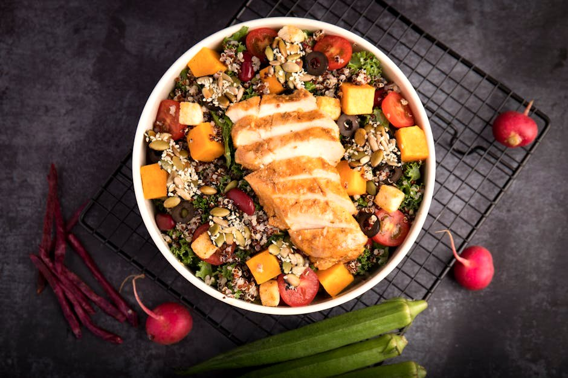

Grilled Chicken & Feta Power Bowl

Grilled Chicken & Feta Power Bowl delivers 71 g of protein for just 10 g net carbs — ready in about 25 minutes. Exactly the kind of meal that makes a high-protein, low-carb week easy to stick to.
Ingredients
- 210 g Chicken breast
- 40 g Feta cheese
- 80 g Mixed salad greens
- 80 g Cucumber
- 60 g Cherry tomatoes
- 6 Kalamata olives
- 1 tbsp Olive oil
- Lemon juice, oregano, salt, to taste
Equipment
- non-stick skillet
- grill pan
Method
- Season the chicken with oregano, salt and pepper and grill or pan-sear ~6-7 min per side until 74C/165F. Rest, then slice.
- Toss greens, cucumber, tomatoes and olives with olive oil and lemon.
- Top with the sliced chicken and crumbled feta.
Storage & make-ahead
Best assembled fresh. Prep the components up to 2 days ahead, keep chilled, and combine just before eating.
Tip
Cooked-weight chicken (~210 g) does most of the protein work; weigh it after cooking for accuracy.
Dietary swaps
Dairy-free: Feta cheese → vegan feta, or simply omit (for lactose intolerance or a dairy-free diet)
Full nutrition (estimated, per serving): 520 kcal · 71 g protein · 10 g net carbs · 26 g fat (11.5 g sat) · 4 g fiber · 3.5 g sugar · 1210 mg sodium. Allergens: Milk. Macros are realistic estimates from standard food-composition values; brands and portions vary.
Get the full cookbook (PDF) — 100 recipes, 3 meal plans & the science →